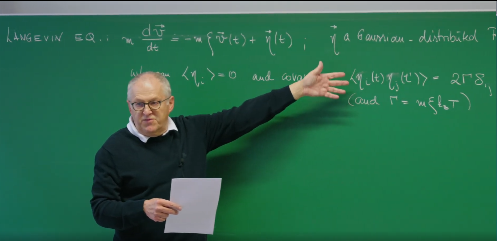
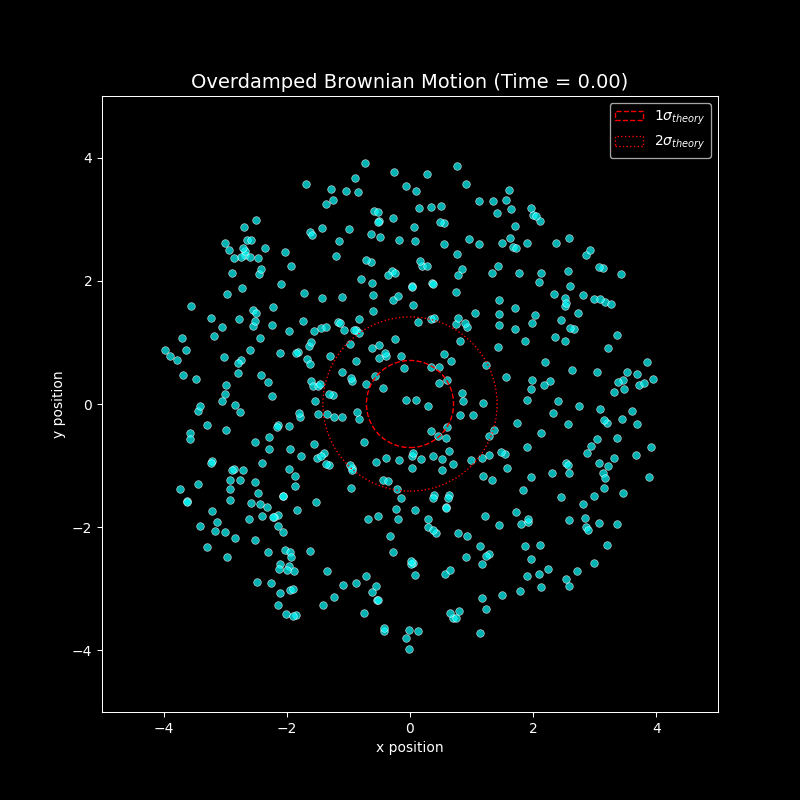
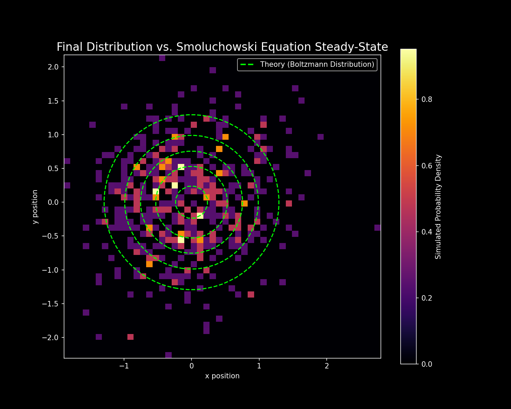

Introduction¶
In the previous lecture, Prof. Erwin Frey introduced the Langevin equation, which describes the trajectory of a single Brownian particle by balancing two forces: a deterministic frictional (damping) force proportional to and opposing the velocity, and a random, rapidly fluctuating force representing continual collisions with surrounding solvent molecules. This provided a microscopic, single‑particle trajectory viewpoint.

In this lecture, we shift from describing a particular random path of one particle to describing how the probability distribution of an ensemble of many non‑interacting particles evolves in time. This is a transition from a stochastic ordinary differential equation (SDE) for a single trajectory to a deterministic partial differential equation (PDE) for the probability density itself. The new equation is the Fokker–Planck equation (FPE).
The Langevin equation contains a random term \(\eta(t)\), which makes any single solution (a trajectory) unpredictable. However, by averaging over the statistics of the noise, we can derive a completely deterministic evolution equation for the probability distribution \(p(v,t)\). This demonstrates a core principle of statistical physics: how deterministic, predictable macroscopic laws (such as for probability distributions) emerge from underlying chaotic, random microscopic dynamics. While the Fokker–Planck equation does not predict the specific path of any one particle, it does precisely predict how the “probability cloud” — comprised of all possible realizations — evolves in time. This shows how statistical averaging “washes out” microscopic randomness to reveal macroscopic determinism — a cornerstone linking mechanics and thermodynamics.
1. The Fokker–Planck Equation in Velocity Space¶
1.1 Starting Point: The Langevin Equation in Velocity Space¶
We begin with the Langevin equation for the velocity \(v\) of a free Brownian particle:
Interpretation of each term:
- \(m\tfrac{dv}{dt}\): inertia (mass times acceleration).
- \(-m\xi v(t)\): viscous drag (damping), always opposing motion; \(\xi\) is friction per unit mass.
- \(\eta(t)\): random force representing continual, random impacts from the surrounding fluid molecules.
The statistics of \(\eta(t)\) are crucial. We model it as Gaussian with:
- Zero mean: \(\langle \eta_i(t) \rangle = 0\).
- Delta‑correlated covariance (white noise): \(\langle \eta_i(t)\eta_j(t') \rangle = 2\Gamma \, \delta_{ij} \delta(t-t')\). The Dirac delta means forces at distinct times are uncorrelated; the strength is set by \(\Gamma\).
Here \(\Gamma = m\xi k_B T\) by the fluctuation–dissipation theorem (FDT) derived previously, which links random fluctuation amplitude (\(\Gamma\)) to dissipation (\(\xi\)) and bath temperature (\(T\)), ensuring correct thermal equilibrium.
1.2 Discretizing the Dynamics¶
To analyze the statistics of velocity increments, discretize over a small timestep \(\Delta t\):
with the noise increment
the net random impulse over \(\Delta t\).
Using the noise statistics,
- Mean: \(\langle \Delta W_i \rangle = \int_t^{t+\Delta t} d\tau\, \langle \eta_i(\tau) \rangle = 0\).
- Covariance:
Crucially, \(\mathrm{Var}(\Delta W) \propto \Delta t\) (not \((\Delta t)^2\)) — a hallmark of white noise and the origin of the \(\sqrt{t}\) scaling in Brownian motion.
1.3 Deriving the Fokker–Planck Coefficients¶
Now we introduce the concepts of drift coefficient \(A_i\) and diffusion coefficient \(B_{ij}\), which are defined as the first and second moments per unit time of the velocity increment, respectively. These two coefficients are the building blocks for constructing the Fokker–Planck equation.
Drift Coefficient \(A_i\) (Representing "Push")¶
-
Definition: \(A_i = \lim_{\Delta t \to 0} \frac{\langle\Delta v_i\rangle}{\Delta t}\). It represents the average, deterministic "drift" or "push" that the particle velocity experiences.
-
Derivation: Following the video, we take the average of the discretized \(\Delta v_i\) equation:
This is because the average value of the noise increment is zero, i.e., \(\langle\Delta W_i\rangle=0\).
- Result: \(A_i = -\xi v_i\). The physical meaning of this result is very clear: the average drift of velocity is entirely caused by friction, and friction always tries to reduce velocity, pushing it toward zero.
Diffusion Coefficient \(B_{ij}\) (Representing "Diffusion")¶
-
Definition: \(B_{ij} = \lim_{\Delta t \to 0} \frac{\langle\Delta v_i \Delta v_j\rangle}{\Delta t}\). It represents the variance of velocity fluctuations, quantifying the extent to which the probability distribution "spreads out" in velocity space due to the action of random forces.
-
Derivation: We follow the calculation in the course, keeping only the lowest order terms in \(\Delta t\) in the limit \(\Delta t \to 0\):
In the process of taking the limit, terms related to \((\Delta t)^2\) and \(\Delta t\langle\Delta W\rangle\) will all vanish.
- Result: \(B_{ij} = \frac{1}{\Delta t} \frac{1}{m^2}(2m\xi k_B T \delta_{ij} \Delta t) = \frac{2k_B T \xi}{m} \delta_{ij}\). This result shows that diffusion in velocity space is constant and its intensity is proportional to the environmental temperature.
Now we can define the drift and diffusion coefficients more concisely:
- Drift \(A_i := \lim_{\Delta t\to 0} \tfrac{\langle \Delta v_i \rangle}{\Delta t}\) (deterministic "push"). From \(\langle \Delta v_i \rangle = -\xi v_i \Delta t\) we get \(A_i = -\xi v_i\).
- Diffusion \(B_{ij} := \lim_{\Delta t\to 0} \tfrac{\langle \Delta v_i \Delta v_j \rangle}{\Delta t}\). Keeping leading order in \(\Delta t\),
Thus velocity‑space diffusion is constant and proportional to temperature.
1.4 The Fokker–Planck Equation for Velocity¶
The general Fokker–Planck form is
Substituting \(A_i=-\xi v_i\) and \(B_{ij} = \tfrac{2 k_B T\, \xi}{m} \delta_{ij}\) yields
Physically, the first term is drift: friction pulls probability toward \(v=0\). The second term is diffusion: random forces spread probability in velocity space.
1.5 Equilibrium: Recovering Thermodynamics¶
At long times (\(t\to \infty\)), \(\partial_t p=0\) and drift‑ and diffusion‑induced fluxes balance.
The stationary equation’s solution is:
the Maxwell–Boltzmann distribution. We started from a purely dynamical model — the Langevin equation — which itself knows nothing about statistical ensembles or thermodynamics. By deriving and solving the Fokker–Planck equation, we demonstrate that this dynamics necessarily yields the Maxwell–Boltzmann distribution for velocities, the cornerstone of equilibrium statistical mechanics. The Langevin equation describes the cause (friction and random collisions); the Fokker–Planck equation describes the process (probability drift and diffusion); and the Maxwell–Boltzmann distribution is the final outcome (the unique, stable equilibrium state). The Fokker–Planck equation reveals the concrete dynamical mechanism by which a system thermalizes through interactions with its environment (friction and fluctuations), ultimately reaching the equilibrium predicted by thermodynamics. In this mechanism, the fluctuation–dissipation theorem (\(\Gamma \propto \xi T\)) is the key that guarantees the correct equilibrium: without it, the balance between drift and diffusion would be broken, and the system would not relax to the temperature‑determined state.
2. Overdamped Limit and the Smoluchowski Equation¶
2.1 High-Friction Environment: Neglecting Inertia¶
Now consider a particle moving in a potential \(U(x)\) with the full Langevin equation
We identify inertia, damping, conservative force, and random force terms. In many physical and biological systems (e.g., colloids in water, proteins in cytoplasm), damping dominates inertia; in this overdamped (high‑friction) limit, momentum is rapidly randomized and the velocity adapts quasi‑instantly to the local force. This is a classic timescale separation: velocity \(v\) is a fast variable relaxing on \(1/\xi\), while position \(x\) is a slow variable evolving over much longer times. Neglecting inertia gives the overdamped (Smoluchowski) Langevin equation
2.2 Mobility, Diffusion, and the Einstein Relation¶
Rewrite as
with mobility \(\mu:=1/(m\xi)\) (terminal speed per unit force). The rescaled noise \(\xi(t)=\eta(t)/(m\xi)\) has covariance
Defining the diffusion coefficient by \(\langle \xi_i(t) \xi_j(t') \rangle = 2D\, \delta_{ij}\, \delta(t-t')\) leads to the Einstein relation
This unifies a macroscopic transport coefficient (\(D\)) with microscopic response (\(\mu\)) and thermal energy \(k_B T\).
The Einstein Relation \(D = \mu k_B T\) was proposed in 1905 by Einstein's theoretical study of Brownian motion, along with Marian Smoluchowski's independent derivation in 1906. Its core idea is that the random motion (diffusion) of particles in thermal equilibrium and the directional motion (migration) driven by external force fields are both regulated by the same thermodynamic quantity \(k_B T\). This formula is not only an early manifestation of the fluctuation–dissipation theorem, but also provides a theoretical foundation for subsequent research. The Einstein relation unifies microscopic fluctuations with macroscopic response, becoming a key bridge connecting statistical physics with engineering applications.
2.3 The Smoluchowski Equation¶
Repeating the Fokker–Planck derivation for position with the overdamped Langevin dynamics gives
- Drift: \(A_i = \lim_{\Delta t \to 0} \tfrac{\langle \Delta x_i \rangle}{\Delta t} = -\mu\, \partial_i U = \mu F_i\) with \(F=-\nabla U\).
- Diffusion: \(B_{ij} = 2D\, \delta_{ij}\).
Thus the Smoluchowski equation for \(P(x,t)\) is
or equivalently \(\partial_t P = \nabla \cdot [\mu (\nabla U) P + D\, \nabla P]\).
2.4 Equilibrium in a Potential¶
Setting \(\partial_t P=0\) (and vanishing flux at infinity) yields
using \(D=\mu k_B T\). This is the Boltzmann distribution. The Smoluchowski equation gives a dynamical rationale: \(U(x)\) drives drift toward low energy, while thermal noise (via \(D\)) enables escape and exploration; the Einstein relation precisely balances these to produce the correct Boltzmann weights.
The Boltzmann distribution \(P_{\text{eq}}(x) \propto \exp\left(-\frac{U(x)}{k_B T}\right)\) is a foundational result of statistical mechanics, with importance far beyond any single physical model. It was proposed by Ludwig Boltzmann in the 1870s, by extending Maxwell's gas molecular velocity distribution to energy space, providing the first microscopic dynamical foundation for the second law of thermodynamics — the tendency of systems toward entropy maximization is essentially a balance result where probability distributions are dominated by energy. In 1902, Josiah Willard Gibbs formalized it as the canonical ensemble in ensemble theory, establishing the mathematical framework of modern statistical physics; in 1905, Einstein rigorously verified the universality of this distribution from a dynamical perspective through the fluctuation–dissipation theorem (\(D = \mu k_B T\)) of Brownian motion, revealing the precise balance mechanism between energy-minimizing drift and entropy-maximizing diffusion.
At the application level, the Boltzmann distribution has penetrated multiple disciplines: in chemistry, it explains the temperature dependence of the Arrhenius equation and is used to calculate reaction rates and equilibrium constants; in materials science, it describes the concentration distribution of defects (such as vacancies and dislocations) in crystals, guiding semiconductor doping design; in biophysics, it becomes the core model for protein folding energy landscapes, predicting the conformational probabilities of enzyme active sites; in information science, the Boltzmann machine utilizes its probability structure to develop deep learning algorithms. More profoundly, it provides a unified framework for quantum statistics (such as the high-temperature limit of Fermi–Dirac and Bose–Einstein distributions) and is used in cosmology to analyze dark matter distributions in galaxy clusters.
Summary: Velocity‑ vs Position‑Space Fokker–Planck Descriptions¶
| Feature | Part I: Velocity space | Part II: Position space (overdamped) |
|---|---|---|
| Variable | velocity \(v(t)\) | position \(x(t)\) |
| Langevin | \(m\dot v = -m\xi v + \eta(t)\) | \(\dot x = -\mu \nabla U + \xi(t)\) |
| Drift | \(A_i = -\xi v_i\) | \(A_i = -\mu\, \partial_i U\) |
| Diffusion | \(B_{ij} = \tfrac{2 k_B T\, \xi}{m}\, \delta_{ij}\) | \(B_{ij} = 2D\, \delta_{ij}\) |
| Fokker–Planck | \(\partial_t p = \nabla_v\cdot(\xi v p) + \tfrac{k_B T\, \xi}{m} \nabla_v^2 p\) | \(\partial_t P = \nabla\cdot(\mu(\nabla U)P) + D\nabla^2 P\) |
| Equilibrium | Maxwell–Boltzmann | Boltzmann |
| Meaning | thermalization of kinetic energy | spatial arrangement in a potential |
3. Visualizing a Smoluchowski Process¶
We simulate overdamped Brownian motion of many particles in a 2D harmonic potential and animate it.
3.1 Numerical Challenge: Solving SDEs¶
For ODEs one might use Euler’s method \(x_{n+1} = x_n + f(x_n)\Delta t\), but for SDEs this is incorrect because it mishandles the noise scaling. The correct simplest method is the Euler–Maruyama scheme: for \(dX = a(X)dt + b(X)dW\),
with the stochastic increment scaling as \(\sqrt{\Delta t}\).
3.2 System Setup: Particles in a 2D Harmonic Trap¶
We simulate many non‑interacting particles in 2D with overdamped Langevin dynamics.
-
Potential model: choose a simple 2D harmonic trap, \(U(x,y)=\tfrac{1}{2}k(x^2+y^2)\), a central confining potential with force \(F=-\nabla U=-k\,r\) pointing to the origin.
-
Discretized equations (Euler–Maruyama):
$$ x_{n+1} = x_n - \mu k\, x_n\, \Delta t + \sqrt{2D\,\Delta t}\,\mathcal{N}_x(0,1), $$
$$ y_{n+1} = y_n - \mu k\, y_n\, \Delta t + \sqrt{2D\,\Delta t}\,\mathcal{N}_y(0,1), $$
with independent standard normal variates \(\mathcal{N}_x,\mathcal{N}_y\).
- Simulation parameters: number of particles
num_particles, mobilitymu, trap strengthk, diffusionD(via Einstein relation andkBT), timestepdt, and total stepsnum_steps.
3.3 Python Implementation and Visualization¶
import numpy as np
import matplotlib.pyplot as plt
import os
import imageio
# --- 0. Set plotting style ---
plt.style.use('dark_background')
# --- 1. Simulation parameter definition ---
num_particles = 500 # Increase number of particles for better statistics
k = 1.0 # Harmonic oscillator potential strength (U = 0.5*k*r^2)
kBT = 0.5 # Thermal energy, k_B * T
mu = 1.0 # Mobility
# Core relationship: Diffusion coefficient determined by fluctuation-dissipation theorem (Einstein relation)
D = mu * kBT
dt = 0.01 # Time step
num_steps = 1000 # Total simulation steps
simulation_time = dt * num_steps
# --- 2. Initialize particle positions ---
# Initially distribute particles randomly within a disk
initial_radius = 4.0
theta = np.random.uniform(0, 2 * np.pi, num_particles)
r = np.sqrt(np.random.uniform(0, initial_radius**2, num_particles))
positions = np.zeros((num_particles, 2))
positions[:, 0] = r * np.cos(theta)
positions[:, 1] = r * np.sin(theta)
# --- 3. Simulation main loop and GIF generation ---
fig, ax = plt.subplots(figsize=(8, 8))
ax.set_aspect('equal')
# Prepare folder to store image frames
output_folder = 'brownian_motion_frames'
if not os.path.exists(output_folder):
os.makedirs(output_folder)
# Pre-calculate coefficient for random term
noise_strength = np.sqrt(2 * D * dt)
# Store filenames for each frame
frame_files = []
print("Starting to generate GIF animation frames...")
# Simulation loop
for step in range(num_steps):
# This is the numerical solution of the overdamped Langevin equation (Euler-Maruyama method).
# This equation describes the trajectory of individual particles, and is the microscopic basis of the Fokker-Planck (Smoluchowski) equation.
# Calculate drift term (from harmonic oscillator potential F = -k*r)
drift = -mu * k * positions * dt
# Calculate random term (diffusion)
noise = noise_strength * np.random.randn(num_particles, 2)
# Update positions of all particles
positions += drift + noise
# Save a frame image every few steps to create GIF
if step % 10 == 0:
ax.clear()
# Use brighter colors to adapt to black background
ax.scatter(positions[:, 0], positions[:, 1], alpha=0.7, c='cyan', edgecolors='w', s=30, linewidths=0.5)
ax.set_xlim(-5, 5)
ax.set_ylim(-5, 5)
ax.set_title(f"Overdamped Brownian Motion (Time = {step*dt:.2f})", fontsize=14)
ax.set_xlabel("x position")
ax.set_ylabel("y position")
# Plot contour lines of theoretical equilibrium distribution
# Theoretical standard deviation sigma^2 = kBT/k
sigma_theory = np.sqrt(kBT / k)
circle1 = plt.Circle((0, 0), sigma_theory, color='r', fill=False, linestyle='--', label=r'$1\sigma_{theory}$')
circle2 = plt.Circle((0, 0), 2*sigma_theory, color='r', fill=False, linestyle=':', label=r'$2\sigma_{theory}$')
ax.add_artist(circle1)
ax.add_artist(circle2)
ax.legend()
filename = os.path.join(output_folder, f'frame_{step//10:04d}.png')
plt.savefig(filename)
frame_files.append(filename)
plt.close(fig)
print(f"Generated {len(frame_files)} image frames.")
# --- 4. Use imageio to combine image frames into GIF ---
print("Combining image frames into GIF...")
gif_path = 'overdamped_brownian_motion_dark.gif'
with imageio.get_writer(gif_path, mode='I', fps=20, loop=0) as writer:
for filename in frame_files:
image = imageio.imread(filename)
writer.append_data(image)
print(f"GIF saved as '{gif_path}'")
# Clean up temporary image files
for filename in frame_files:
os.remove(filename)
os.rmdir(output_folder)
print("Cleaned up temporary image files.")
# --- 5. Final distribution analysis: Comparison of simulation results with steady-state solution of Smoluchowski equation ---
print("Plotting final probability distribution...")
fig_dist, ax_dist = plt.subplots(figsize=(10, 8))
# Plot 2D histogram (heatmap) of simulation results
# This represents the particle probability distribution P(x, y) obtained from Langevin dynamics simulation
counts, xedges, yedges, im = ax_dist.hist2d(
positions[:, 0], positions[:, 1],
bins=50, density=True, cmap='inferno'
)
fig_dist.colorbar(im, ax=ax_dist, label='Simulated Probability Density')
# Calculate and plot theoretical steady-state solution
# The steady-state solution of the Smoluchowski equation is the Boltzmann distribution: P(x, y) ~ exp(-U(x,y)/kBT)
# For harmonic oscillator potential U = 0.5*k*(x^2+y^2), this is a 2D Gaussian distribution
sigma_theory = np.sqrt(kBT / k)
x = np.linspace(-5, 5, 100)
y = np.linspace(-5, 5, 100)
X, Y = np.meshgrid(x, y)
Z = (1.0 / (2 * np.pi * sigma_theory**2)) * np.exp(-(X**2 + Y**2) / (2 * sigma_theory**2))
# Overlay theoretical solution as contour lines on heatmap
ax_dist.contour(X, Y, Z, levels=5, colors='lime', linewidths=1.5, linestyles='--')
# Set chart title and labels
ax_dist.set_title("Final Distribution vs. Smoluchowski Equation Steady-State", fontsize=16)
ax_dist.set_xlabel("x position")
ax.set_aspect('equal')
ax_dist.set_ylabel("y position")
# Create a fake line object for legend
from matplotlib.lines import Line2D
legend_elements = [Line2D([0], [0], color='lime', lw=2, linestyle='--', label='Theory (Boltzmann Distribution)')]
ax_dist.legend(handles=legend_elements)
ax_dist.set_aspect('equal', 'box')
final_dist_path = 'final_distribution_comparison.png'
plt.savefig(final_dist_path, dpi=150)
print(f"Final distribution comparison plot saved as '{final_dist_path}'")
plt.show()

The animation shows particles spreading and then concentrating under the harmonic potential’s “pull” and thermal noise “stirring,” approaching a dynamic steady concentration near the center.

The 2D histogram at the end of the simulation represents the empirical probability density \(P(x,y)\). Overlaid green dashed concentric contours show the theoretical steady state from the Smoluchowski equation — the Boltzmann distribution \(P_{\text{eq}}(x) \propto e^{-U(x)/k_B T}\), which in a harmonic trap is a 2D Gaussian. The long‑time statistics from the Langevin trajectories converge precisely to the steady‑state solution of the Fokker–Planck/Smoluchowski description.
Conclusion¶
This lecture builds a bridge between two fundamental perspectives on stochastic processes: the Langevin equation for particle trajectories and the Fokker–Planck equation for probability evolution. Though mathematically different (SDE vs PDE), they describe the same physics and are mathematically consistent.
- From random walks in velocity to statistical laws: starting with the full Langevin equation (inertia, friction, random force) and analyzing increments over small \(\Delta t\) yields drift and diffusion coefficients, leading to the Fokker–Planck equation for \(p(v,t)\). Its stationary solution is the Maxwell–Boltzmann distribution.
- High‑friction simplification: the overdamped limit reduces the Langevin dynamics to an equation for position alone; applying the same derivation gives the Smoluchowski equation for \(P(x,t)\).
- Equilibrium in a potential: the Smoluchowski equation’s steady state in a potential \(U(x)\) is the Boltzmann distribution \(P_{\text{eq}}(x) \propto e^{-U/k_B T}\). Our Python simulation illustrates the ensemble’s approach to this distribution in a harmonic trap.
Throughout, the fluctuation–dissipation theorem appears as the Einstein relation \(D=\mu k_B T\), revealing the precise proportionality between fluctuations (diffusion \(D\)) and dissipation (mobility \(\mu\) or friction \(\xi\)) set by the environment’s temperature — ensuring relaxation to the correct thermodynamic equilibrium.